旅記 No.28
2025/08/21～08/24
台湾
8/21 出発
三度目の台湾。飛行機が寒かったが外は暑い。
今回は現地で友人たちと合流する緩い旅行。初日の夜から飲んで刺激的な語らい。
8/22 台北・山峡・鶯歌
早朝に目がさめたのでホテル近くで散歩と朝食。
台北駅の地下道は鬼滅やポケモンなど日本のキャラクターで溢れており、扉のデザインも普通ではない。
露店で朝食
EVA?
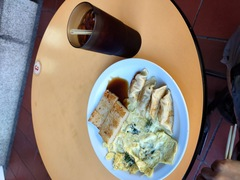
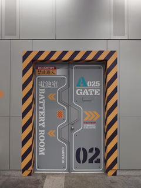
一日早く台北入りしていた友人と合流し、今日は山峡と鶯歌へ。
台北から電車とバスで山峡に到着。見慣れない野菜が並ぶ賑やかな朝市を抜け、レンガの建物が並ぶ老街へ。 街は小さかったが、友人と土産物屋を覗いたり買食いしたりしてダラダラ散策が楽しかった。
山峡
名物だがわりと普通なパン
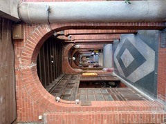
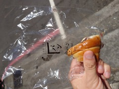
清水祖師廟。戦後に再建されたもののようだが彫刻が見事。
清水祖師廟
工程を想像したくなる彫刻
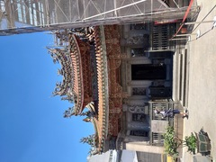
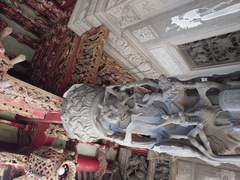
昼食にローカルな麺など食べてから陶磁器の街鶯歌へ移動。
茶器を中心とした陶磁器以外にも石や彫刻など無機物の店が並び、土産物を探しつつ歩き回った。 最後は良い感じの店で飲茶の時間。
窯が並ぶ洞窟のような
飲茶。落ち着いた時間
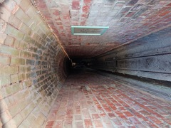
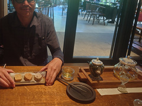
熱射で少々ダウンし、台北に戻ってホテルで一旦休んだ。 明日が不安になったが、夜の宴会でうまいものを飲み食いしていたら回復した。
土産屋を案内してもらったりして夜の台北を楽しんだ。 台湾の人はフレンドリーで、言語で困ることもないので旅行が気楽すぎる。
8/23 陽明山
朝、現地メンバーに迎えに来てもらってバイクで陽明山へ。 台湾も三度目なので趣向を変えて今回は登山へ。
登山記録は YAMAP で書いているのでこちらも。
YAMAP 台湾 七星山・夢幻湖山
熱帯風
リスの影。鳴き声が聞こえる
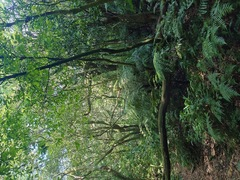
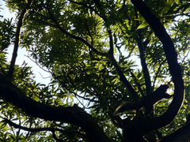
なぜ海外まで行って登山かと思われるかもしれないが、 動植物や登山道の様子なども含め日本の山と違った雰囲気をあちこちに感じられる。 旅行荷物が増えてしまうのがつらいが。
七星山山頂
七星山東峰から
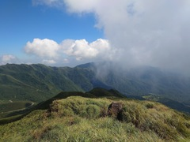
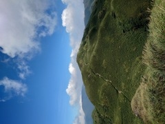
天気が良く、森や湖、山頂のパノラマが気持ちよかった。
緩めの山だったが、暑いしみんなで登るにはちょうど良かったと思う。 しかし標高や気温など考えても普段より息が切れすぎたので理由を探していた。 加齢ゆえだと思いたくないので硫黄のせいということにした。
下山路
夢幻湖
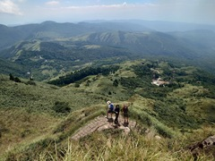
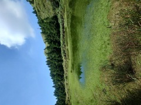
リスや猿にも会えた。日本のとは型番が違う感じのデザインで興味深い。
模様の入ったトカゲ
下山したら猿の群
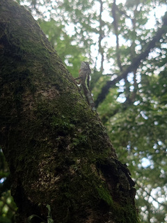
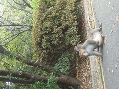
無事下山して帰りもバイクで送ってもらい、街に降りるにつれて徐々に上がる気温を感じる。 夜まで一旦解散。
夕食は人気のガチョウ料理に案内してもらった。美味。 食べすぎて気持ち悪くなったので夜の台北を二駅ほど歩いて帰った。
夕食。ガチョウ料理
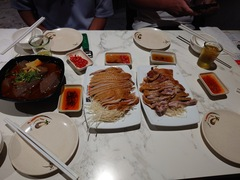
8/24 帰国
帰国日の朝、少し散歩。太陽が昇る前でも暑い。
淡水川。厚木みたい
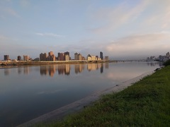
短い旅行だったが楽しかった。同行者がいる海外は久しぶりで、いつもと違う楽しさがあって良かった。
Fin.